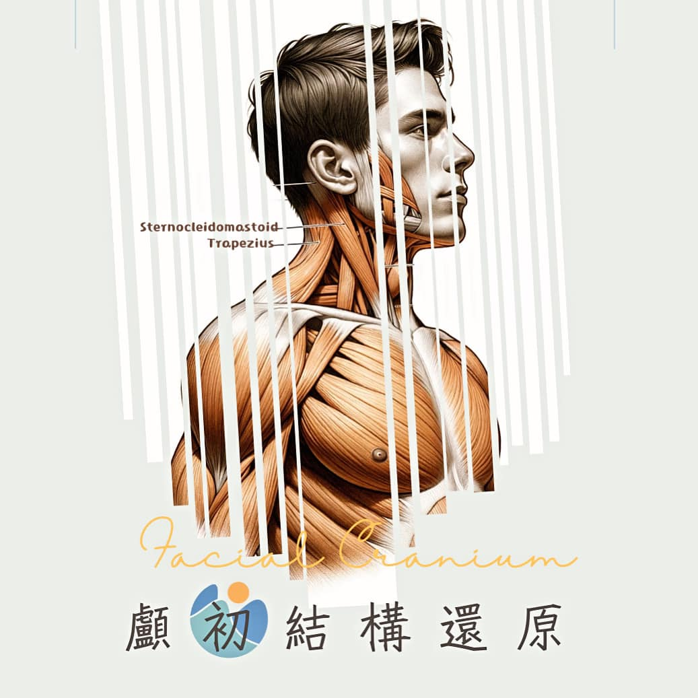

#顱初結構還原
#顱初結構還原
前篇提到：
頭顱與鄰近的頸椎、肩膀相連著許多重要的大肌群，日常不良姿勢和不當的力學拉扯，將導致肩頸與顏面肌群的張力分布不均。
進而累積造成頭顱骨結構的歪斜，而產生了鼻塞、耳悶、頭痛、失眠、大小臉…..等不同症狀。
今天就來聊聊頸部到底有那些重要的肌肉，會影響顱骨顏面的歪斜吧！
頭肩頸相連的最主要肌群有二：
1️⃣. 胸鎖乳突肌(Sternocleidomastoid muscle, SCM)：
從胸骨、鎖骨出發，連接到顳骨的乳突，故稱為胸鎖乳突肌。
兩側同時收縮可做出仰頭的動作，單側收縮則可使頭轉向對側。
顳骨向前延伸連接至顴骨，向後則連接至枕骨，因此當人們習慣於單側施力、側睡、斜頸或聳肩工作時，就容易使得胸鎖乳突肌的張力不對稱，影響了顴骨產生大小臉的狀況。
2️⃣. 斜方肌(Trapezius muscle)：
從枕骨的枕外粗隆與上頸線內三分之一段出發，連接頸韌帶、第七頸椎棘突、所有胸椎棘突和相應的棘上韌帶。
斜方肌分為上中下三個部分，其中上斜方肌的肌束纖維向外和側方延續，最後連接於鎖骨的外側三分之一後緣；其功能為上舉及外旋肩胛骨，協助頭部後仰，側屈及旋轉。
科技通訊工具發達的現代，多數人使用3C的時間拉長，長時間的駝背聳肩，造成烏龜脖、圓肩的族群日益增長。
長久累積下來，不僅對頸椎產生不良影響，也容易對枕骨、顳骨乳突產生不對等的拉扯張力，當枕骨、乳突產生歪斜，一樣會微小移動與其相連接的頭顱骨。
當我們某天一照鏡子發現
咦?!怎麼臉好像歪歪的?? 就需要好好來整理一番了。
當然，影響顱骨與肩頸的肌群不只這兩條，還有許多小型、精細的肌群都時時刻刻再影響著頭顱與顏面的精細動作。
這些肌肉也和肩頸緊繃、僵硬、疼痛，甚至肩關節活動不順暢、疼痛…等症狀息息相關。
如此精密複雜的肌群交互影響，造就了千變萬化的排列組合，若有相關需求的朋友，記得尋求專業的醫療人員來做謹慎仔細的評估與治療，萬不可聽信鄉野傳說，造成不可逆的遺憾唷！
今天我們就先聊到這，其他的我們下回待續啦！
太初專人諮詢⬇️
https://lin.ee/jrVoSeM
太初中醫診所
中醫師 黃彥鈞
中醫師 薛博文
中醫安心講堂 褚衍強中醫師
中醫師 鄒知秀 Dr.Emma
